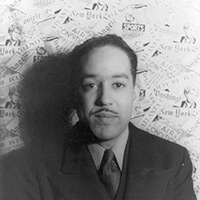

<style>
  .poet {
    margin-top: 100px;
  }

  .poet .about {
    margin-bottom: 10px;
    overflow: hidden;
    font-size: 20px;
  }

  .poet img{
    float:left;
    margin-right: 20px;
  }
</style>

<section class="dark container">
  <article>
    <iframe width="700" height="394" src="https://www.youtube.com/embed/kZQEU7pwkkw?rel=0&start=23" frameborder="0" allowfullscreen></iframe>
    <h1 style="font-size: 62px;">Nikki Giovanni<span class="role">, artist</span></h1>


    <p>
      His headstone said<br />
      FREE AT LAST, FREE AT LAST<br />
      But death is a slave's freedom<br />
      We seek the freedom of free men<br />
      And the construction of a world<br />
      Where Martin Luther King could have lived<br />
      and preached non-violence
    </p>
    <p class="byline">
      &ndash; <a target="_blank" href="http://www.amazon.com/Black-Feeling-Talk-Nikki-Giovanni/dp/068825294X/">
        <em>The Funeral of Martin Luther King Jr.</em> by Nikki Giovanni
      </a>
    </p>
  </article>
</section>
<section class="container">
  <article>
    <h2 style="text-align: center;">Poetry</h2>

    <div class="poet">
      <div class="about">
        
        <h3>Langston Hughes</h3>
        <p>
          Poet, activist, and a leader of the 1920s Harlem Renaissance, Hughes
          was an early innovator of the jazz poetry art form.
          <a target="_blank" href="http://www.amazon.com/Poetry-Young-People-Langston-Hughes/dp/1454903287/">Read his poetry</a>
        </p>
      </div>

      <iframe width="700" height="400" src="https://www.youtube.com/embed/4CUKyVrhPgM?rel=0" frameborder="0" allowfullscreen></iframe>
    </div>

    <div class="poet">
      <div class="about">
        
        <h3>Tupac Shakur</h3>
        <p>
          Son of political activists (Black Panthers), Tupac is recognized as
          one on the most influential rappers of all time with two Diamond
          certified albums.
          <a target="_blank" href="https://itunes.apple.com/us/album/all-eyez-on-me-remastered/id7033322">Listen to his music</a>.
        </p>
      </div>

      <iframe width="700" height="400" src="https://www.youtube.com/embed/HfXwmDGJAB8?rel=0" frameborder="0" allowfullscreen></iframe>

      <!--iframe width="700" height="400" src="https://www.youtube.com/embed/6byEc1OrXYg?rel=0&start=463" frameborder="0" allowfullscreen></iframe-->
    </div>

    <div class="poet">
      <div class="about">
        
        <h3>Kwame Alexander</h3>
        <p>
          Poet and author, his book <a target="_blank" href="http://www.amazon.com/Crossover-Kwame-Alexander/dp/0544107713/">The Crossover</a>
          won the Newberry Award as the most distinguished contribution to American literature for children in 2015.
          <a target="_blank" href="https://twitter.com/kwamealexander">Follow him on Twitter</a>.
        </p>
      </div>

      <iframe width="700" height="400" src="https://www.youtube.com/embed/7XlhIwMgZLs?rel=0&start=130" frameborder="0" allowfullscreen></iframe>
    </div>

    <div class="poet">
      <div class="about">
        
        <h3>Safia Elhillo</h3>
        <p>
          <a target="_blank" href="http://wellandoftenpress.com/books/the-life-and-times-of-susie-knuckles">Read her poetry</a><br />
          <a target="_blank" href="https://twitter.com/mafiasafia">Follow her on Twitter</a>
        </p>
      </div>

      <iframe width="700" height="400" src="https://www.youtube.com/embed/e2Qs485hkhA?rel=0&start=14" frameborder="0" allowfullscreen></iframe>
    </div>
  </article>
</section>
<section class="dark container">
  <article>
    Read Nikki Giovanni's Poetry
  </article>
</section>
<section class="container">
  <nav>
    <a href="../maya-angelou/">
      Maya Angelou
    </a>
    <a href="../kendrick-lamar/">
      Kendrick Lamar
    </a>
  </nav>
</section>
